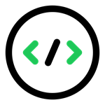
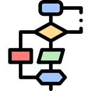

Atualmente, a programação está presente em praticamente todos os setores da sociedade, como educação, saúde, segurança, comunicação, comércio e entretenimento. Por esse motivo, o conhecimento em desenvolvimento de software tornou-se um diferencial no mercado de trabalho, oferecendo diversas oportunidades profissionais e possibilidades de inovação. Assim, estudar programação representa não apenas aprender uma profissão, mas também adquirir conhecimentos capazes de transformar ideias em soluções reais por meio da tecnologia.
O que estudar no começo
Lógica de Programação

Lógica de programação é a habilidade de organizar instruções de forma sequencial e coerente para que um computador execute tarefas específicas. É a base para criar algoritmos e desenvolver software, permitindo que problemas complexos sejam divididos em etapas menores e resolvidos de forma sistemática. Ela funciona como a “gramática” do pensamento computacional, ajudando a estruturar comandos claros e compreensíveis por uma máquina. Sem lógica, mesmo programadores experientes podem ter dificuldades em criar sistemas consistentes.
Algoritmos

O algoritmo nada mais é do que uma sequência lógica que oferece uma orientação para um programa ou Inteligência Artificial, possibilitando a realização de alguma ação. Por meio dele, o computador ou qualquer outro sistema recebe um comando e o executa como se fosse uma tarefa. Caso os algoritmos não sejam bem feitos ou apresentem qualquer tipo de falha, isso poderá arruinar toda uma programação, seja ela de um programa ou de uma IA.
Encerramento
Este site foi desenvolvido apenas para fins educacionais e experimentais, como parte dos estudos e práticas na área de programação e desenvolvimento web. Seu objetivo é aplicar conhecimentos adquiridos durante o aprendizado, permitindo o desenvolvimento de habilidades técnicas, criatividade e raciocínio lógico. O projeto não possui finalidade comercial, servindo exclusivamente como experiência prática para aperfeiçoamento acadêmico e profissional.